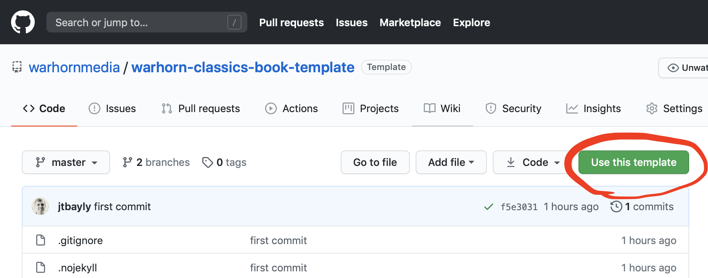
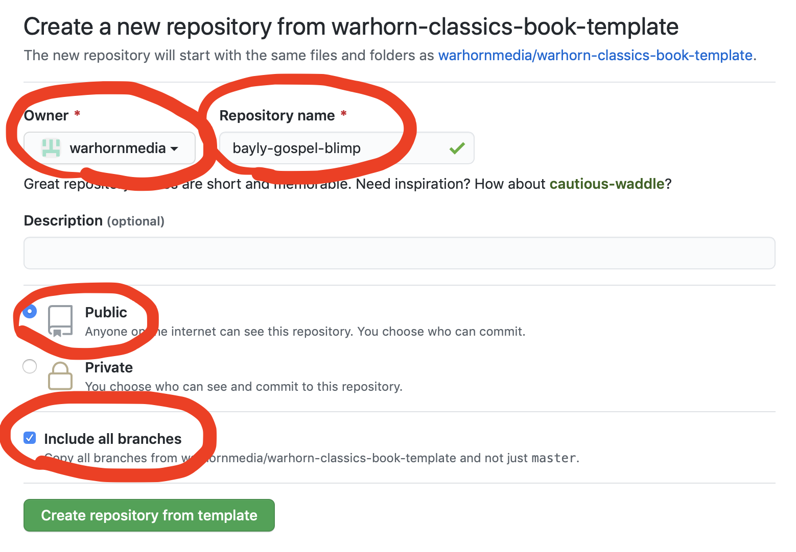

Chapter 1 Some quick reminders
1.1 Creating a new book
- Go to the repo on Github and click “Use this template.”

- Change the owner to warhornmedia. Enter a repository name using the format “authorlastname-short-book-title”. Set the repository to public. And include all branches. Then click “Create repository from template”

- Clone the new repo to your computer and navigate into its folder in Terminal. Then run the following command locally:
travis encrypt GITHUB_PAT=yourTokenGoesHere --add- Add the project on travis-ci.com (You may have to log out and back in for the project to show up.)
Congrats! You now have a new book that will rebuild automatically any time you push changes to github.
For more in-depth instructions on setting up your new book, as well as important information on how to code the book, check out the style guide.